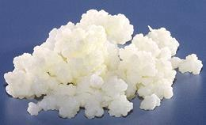
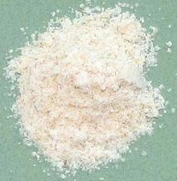

SAFARI
Users
Yogurt
[Yogurt (Turkish), Yoghurt (UK, Australia, English Canada), Yogourt (France, French Canada), Madzoon (Armenia), Da-hi (India)]
Without qualifiers, the name "Yogurt" implies "plain yogurt", just as the bacteria have fermented and coagulated it. It has a light, delicate texture but is solid enough to be picked up with a fork. It is made in both "natural" and "industrial" versions - read the ingredients list on the label. In commercial production, plain yogurt is often flavored with fruit, honey or other flavoring substances.
The origin of yogurt, both time and place, is uncertain, but the earliest written mention is from ancient Greek sources that attribute it to barbarians to the north (Bulgaria, etc.). Since antiquity there have been many claims of health benefits from eating yogurt, and many of them may be true.
Yogurt is a bacterial fermentation product of regular milk. In this fermentation lactose is converted to lactic acid, which acts on the milk proteins to form a gel. Lactobacillus delbrueckii subsp. bulgaricus and Streptococcus thermophilus bacteria are the major bacteria, but others may be added.
Yogurt is made predominantly from the milk of cows, but also from water buffalo, goats, sheep, horses, camels, and yaks, depending on region.
Industrial production was started in 1919 in Spain by Isaac Carasso, a Sephardic Jew from Ottoman Salonica, with his Danone company, later called Dannon in North America.
Labne- [Labneh,Labni; Suzma, Süme (Turkic); Strained yogurt, Yogurt Cheese, Kefir cheese (not exact)]This is plain yogurt with the whey squeezed out. In homes, this is done by putting it in a cloth bag and suspending over a bowl. In production, the whey is removed in centrifuges. This produces a product that is similar to a very soft white cheese. This product is often used in cooking in the Eastern Mediterranean
region and parts of India because the fat content is high enough to
prevent it from curdling.
Greek YogurtThis is strained Yogurt similar to Labne but with more whey remaining - or it can be plain Yogurt with thickeners to make it seem strained. This is all coupled with fancy advertising programs aimed at separating yuppies from their money by making them feel special. The name comes from the first successful North American strained yogurt promotion by Fage, an Athens based company. Greeks actually use mostly plain, unstrained yogurt. This product varies a lot in firmness, depending on manufacturer its healthiness is often seriously compromised by addition of sweet fruit concentrates, honey, and other adulterants. AryanThis is a lightly sour drink simply made from yogurt thinned with water. My favorite brand is Abali, who also make a mint flavored version. Ingred: Low fat milk, water, salt, active yogurt cultures. Of course, many of our industrialists just don't do things that simply - read the label. I have encountered another brand with these ingredients: Cultured pasteurized skim milk, water, cream, whey protein concentrate, tapioca & corn starch, salt, carrageenan, Contains live active yogurt cultures probiotic bacteria (S. thermophilus, L. bulgaricus, Bifidobacterium ssp). |
Other Fermented Milk Products
Kefir
This is a lightly soured and lightly thickened drink made from cultured whole milk. It is also used as an ingredient, in liquid or dried form. It has more fats, more protein, more probiotic bacteria, and more yeast than yogurt. Kefir originated from the North Caucasus, Eastern Europe, and Russia. My favorite brand is Karoun. Ingred: Cultured pasteurized Grade A milk and skim milk. Live active Kefir cultures: L. Bulgaricus (delbrueckii), S. Thermophilus, L. Rhamnosus, L. Lactis, L. Diacetylactis, L Cremoris, L. Mesenteroides, L. Acidophilus, L. Paracasei, Bifidobacterium.
Kefir Grains
 This is the culture used to ferment whole milk into Kefir. The culture, of bacteria and yeasts is held together by milk proteins, lipids, and polysaccharides. The culture may include L. Bulgaricus (delbrueckii), S. Thermophilus, L. Rhamnosus, L. Lactis, L. Diacetylactis, L Cremoris, L. Mesenteroides, L. Acidophilus, L. Paracasei, and Bifidobacterium. The exact balance of bacteria and yeasts varies from batch to batch due to exact fermenting conditions. The grains are strained out of the product and used for the next batch. Photo by A. Kniesel distributed under license Creative Commons Attribution-ShareAlike v3.0 Unported.
Kashk
 This product is made from yogurt and other fermented milk products, often combined with grains, dried and formed into balls or powder. It is easily transported and used as the basis of slightly sour soups, just add water, broth or milk. It is popular in Iran, Kurdish regions, Turkey, Mongolia, Central Asia, Transcaucasis, and the Levant The photo specimen was made in Lebanon from Bulgur wheat and dried Kefir from sheep milk. It is Tazah brand, so easily found in Southern California.
Tarhana
[Tarhana (Turk); Trahaná (Greek); Tarkhana (Armenia); Tarxana (Kurd); Tarkhineh, Tarkhaneh, Tarkhwaneh (Persian)]
This product is made from grain flour and yogurt and other fermented
milk products, dried and formed into crumbs. Other ingredients, including
vegetables, may be added. It is easily transported and used as the basis
of slightly sour soups, just add water, broth, or milk. It is popular in
the Balkans, including Greece, the Caucasus and Persia. The photo specimen
of Sour Trahaná was made in Greece from Soft Wheat Flour and
Yogurt, purchased on-line. The crumbs were about 0.05 inch randoms.
Nutrition & Health
These fermented milk products are considered very healthful, especially with the current emphasis on probiotic bacterial cultures, which these products are packed with. Because their fermentation turns lactose into lactic acid, many people who are lactose intolerant can consume them.
Unfortunately, manufacturers of these products, especially those that advertise heavily, not only use unnatural processes to make them, sacrificing health benefits, or, in a play for shelf space and the yuppie market, adulterate them with sugar and sugar laden fruit concentrates. These products are of little, or even negative, health benefit, yet are sold with the implication they are "health foods".